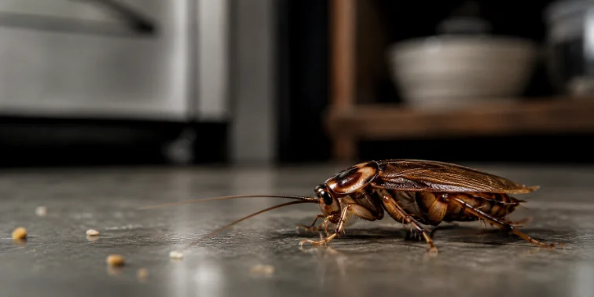
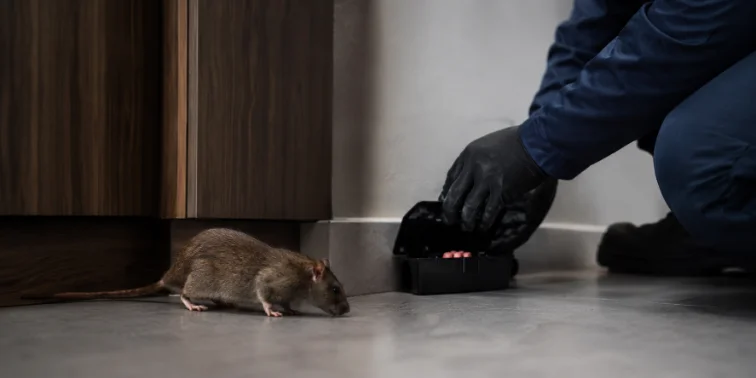
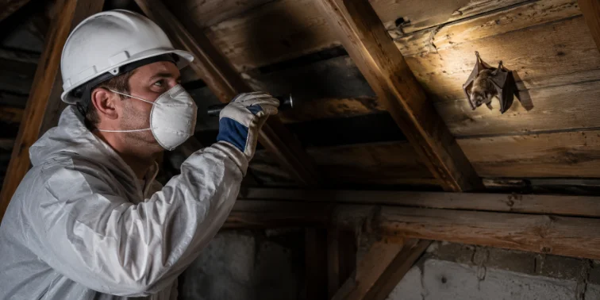
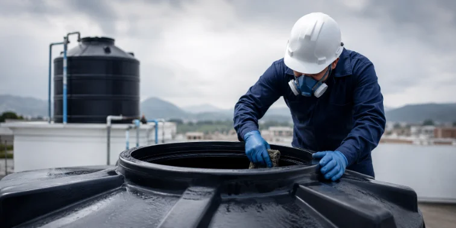
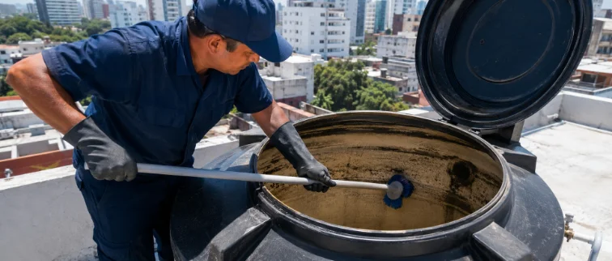

Alta Plaga #1 urbana VAXA · SCANNING…Cucarachas
Fumigación con tratamientos preventivos y correctivos durante todo el año.
Eliminar cucarachasen CABA y Gran Buenos Aires
Soluciones profesionales de fumigación y mantenimiento de tanques de agua —limpieza, reparación e impermeabilización— para hogares, empresas, consorcios, administraciones, escuelas e instituciones en Capital Federal y Gran Buenos Aires.
Elegí tu caso y te llevamos directo a la solución.
Mitad fumigación, mitad tanques de agua: identificá tu situación y accedé a un tratamiento profesional preventivo y correctivo pensado para tu espacio.

Alta Plaga #1 urbana VAXA · SCANNING…Fumigación con tratamientos preventivos y correctivos durante todo el año.
Eliminar cucarachas
Alta Riesgo sanitario VAXA · SCANNING…
Media Espacios abiertos VAXA · SCANNING…Intervención profesional y segura para balcones, terrazas, aleros y espacios abiertos.
Consultar servicio
Prev Higiene esencial VAXA · SCANNING…Limpieza y desinfección profesional para que el agua de tu tanque esté siempre en condiciones.
Solicitar limpieza
Destacado Muy solicitado VAXA · SCANNING…Reparamos fisuras, pérdidas, tapas y estructuras dañadas. Uno de nuestros servicios más solicitados.
Consultar reparaciónTratamientos de impermeabilización para tanques y techos, evitando humedad y daños estructurales.
Consultar impermeabilizaciónEl agua que tomás y usás todos los días pasa por tu tanque. Mantenerlo limpio, reparado e impermeabilizado es tan importante como controlar las plagas de tu espacio.
Limpieza y desinfección profesional para eliminar sedimentos, barro y contaminación del agua de consumo.
Consultar por WhatsAppReparamos fisuras, pérdidas, tapas, flotantes y estructuras dañadas para que tu tanque funcione sin filtraciones.
Consultar por WhatsAppTratamientos de impermeabilización para tanques y techos, evitando humedad y daños en la estructura del edificio.
Consultar por WhatsAppUn tanque sucio, fisurado o sin impermeabilizar puede afectar la calidad del agua que consumís y dañar la estructura de tu casa o edificio. El mantenimiento periódico previene estos problemas.
Las cucarachas no son solo un problema de verano. Fumigación profesional durante todo el año.
Eliminar cucarachasFisuras, pérdidas y tapas dañadas. Reparamos tu tanque para que vuelva a funcionar sin filtraciones.
Consultar reparaciónFumigación, prevención y control de roedores para hogares, comercios, edificios y empresas.
Consultar por roedoresLimpieza y desinfección profesional de tanques de agua para hogares, edificios e instituciones.
Solicitar limpiezaTratamientos para reducir insectos voladores en espacios abiertos, piletas, hogares e instituciones.
Controlar mosquitosImpermeabilización de tanques y techos, más análisis de agua potable para tu hogar o edificio.
Solicitar impermeabilizaciónAlgunas de las marcas, edificios e instituciones que confiaron en nuestros servicios de fumigación y mantenimiento de tanques.
* Nombres de referencia para esta demo.
Contactá a VAXA y recibí atención personalizada para tu hogar, empresa, edificio o institución en CABA y Gran Buenos Aires.